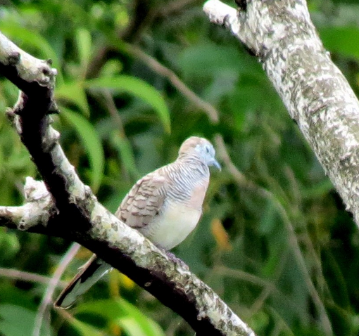

B
urung perkutut jawa dengan nama latin geopella striata bukan hanya burung yang mampu bersuara, akan tetapi burung ini mempunyai beragam keunikan yang tidak di miliki oleh burung lainnya. bagi sebagian pemelihara burung, dengan hanya melihat perkutut, sudah bisa memastikan
profil perkutut jawa
- Perkutut Jawa (Geopelia striata) adalah burung pengicau kecil dari suku Columbidae
- Ukuran Tubuh: Panjang sekitar 20 hingga 25 cm dengan tubuh yang ramping dan ekor yang panjang.
- Warna Bulu: Didominasi warna abu-abu kecokelatan di bagian atas (cokelat tanah kusam),
- Motif Khas: Terdapat garis-garis halus berwarna hitam (berpalang) di bagian leher, dada bagian atas, dan sisinya, mirip motif kain lurik tradisional.
cara berternak perkutut jawa
1. persiapan kandang
Idealnya berukuran minimal 60 cm x 60 cm dengan tinggi 90-180 cm per pasang burung, atau bisa menggunakan ukuran lebih besar seperti 75 cm x 100 cm dengan tinggi 180 cm agar leluasa.
2. pemilihan & seleksi indukan
Pilih indukan yang sudah berumur minimal 8 bulan atau sudah siap secara mental dan organ reproduksi.
3. proses penjodohan
Masukkan calon jantan dan betina ke dalam sangkar atau sekat kandang yang berbeda, tetapi letakkan berdampingan selama 3–7 hari.
4. perawatan & pemberian pakan
Berikan campuran milet putih, gabah ukuran kecil, serta tambahan beras merah atau ketan hitam secukupnya.



tertarik untuk budidaya / memelihara perkutut jawa?,
penawaran khusus bagi anda
harga 1 ekor perkutut remaja Rp 100.000
sekarang cukup Rp 50.000 saja
berminat hubungi kami di WA - 0123456789